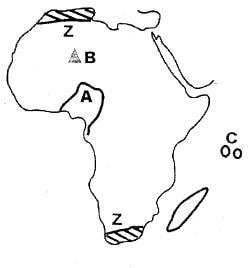

Use the map of Foto area to answer questions 1-7
1. What is the approximate length of the tarmac road in the area represented by the map?
A). 12km2. What climatic conditions are experienced in the North-Western part of Foto area?
B). Hot and dry conditions3. The settlement pattern in the area covered by the map can generally be described as
D). Clustered4. Foto town serves the following functions except one. Which one is it?
C). It is a health centre5. Foto area slopes towards one of the following directions. Which one is it?
C). South - West6. Who among the following is elected to represent Foto area in the National Assembly?
B). The woman representative7. All the following statements are true about the area represented by the map except one. Which one is it?
A). The soils found in. the Eastern part of the map are likely to be sandy soils.8. Which of the following is NOT part of the social organization of the San community in the pre-colonial period?
D). They were ruled by hereditary chiefs9. The kingdom of old Ghana collapsed when it was attacked by Berbers from the North known as
A). Almoravids10. Which of the European nations was NOT involved in the scramble and partition of Africa?
D). Sweden11. Three of the following statements are true of Masaku who was a traditional leader of the Akamba. Which one is NOT?
C). He collaborated with the British12. Which of these Eastern African communities was traditionally ruled by council of elders?
D). Ameru13. Three of the following leaders collaborated with the colonialists during the colonial period. Who did not?
C). Mekatilili wa Menza14. The following describes an early visitor in Eastern Africa.
i. He was a journalist
ii. He came to Eastern Africa in search of an explorer
iii. He met the explorer he was looking for at Ujiji in 1871
iv. He explored around River Lualaba and
River Congo. The explorer described above is D). Henry Morton Stanley15. Who among the following personalities was involved in trade in Eastern Africa?
C). Carl Peters16. he following countries are found in Africa
i. Ghana
ii. Kenya
iii. Tanzania
iv. Somalia
Which of these is the CORRECT order in which these countries achieved their independence? C). i, iv, iii, and ii17. In which of the following years did Zanzibar, Pemba and Tanganyika unite to form the united Republic of Tanzania?
B). 196418. Three of the following statements are true of Haile Selassie of Ethiopia. Which one is NOT?
A). He formed the political association that led his country to achieve independence.19. The headquarters of IGAD are based in one of the following Eastern African Counties. Which one is it?
D. Djibouti20. The following describes a philosophy in Kenya
i. It promotes equal participation in economic activities
ii. It promotes political democracy
iii. It promotes equal distribution of the national wealth
iv. It was established in 1965 through the efforts of Jomo Kenyatta and Tom Mboya.
The philosophy described above is known as A. African socialism21. The following factors promote peace. Which one does not?
D. Cattle rustling22. One of the following is an economic right. Which one is it?
C. The right to work23. In Kenya, election petitions involving presidential candidates are heard and determined by one of the following courts. Which one is it?
A. Supreme court24. Who among the following personalities in Kenya has never served as a vice-president?
D. Masinde Muliro25. A member of the county assembly can not lose his seat if he or she
C. Differs in opinion with the county governor26. Which of these sets of Communities is composed of highland nilotes only?
D. Kipsigis, Sebei and Marakwet27. Some of the Semitic speakers of Ethiopia are the
B. Amhara and Falasha28. The Berbers, Tuaregs and Arabs are communities found in one of the following regions of Africa. Which one is it?
D. Northern Africa29. The following relates to a community in Africa.
i. They are believed to be the earliest people to occupy Africa.
ii. They are short with an adult being about 1.3 metres tall
iii. Their life is largely communal
iv. They traditionally lived by hunting and gathering
The community described above are the A. Bambuti30. Below are statements about the migration of a community into Kenya during the pre-colonial period.
i. They migrated from the Bahr-el-Ghazal region in Southern Sudan.
ii. They settled at Pubuhgu Pakwach in Uganda before moving into Kenya in three groups
iii. They settled along the shores of Lake Victoria
The community whose migration pattern is described above is the C. Luo31. In traditional African societies age-groups are formed mainly through
B. Initiation32. In the African traditional societies, children learnt through the following ways except one. Which one is it?
C. Through reading stories33. Which of these arms of the government is involved in implementing all government policies?
C. Executive34. Public primary schools in Kenya are directly managed by the _________
B. School committee35. Who,among the following people is authorized to conduct a civil marriage in Kenya?
C. Attorney General36. Three of the following statements are true of the school motto except one. Which one is it?
D. All the school mottos are written in English language.Use the map of Africa below to answer questions 37-40
37. The physical feature marked B on the map
D. Was formed through volcanic action38. One characteristic of the climatic region shaded and marked Z on the map is that
D. It experiences cool and wet winters39. The MAIN mineral mined in the country marked A on the map is
B. Petroleum40. The capital city of the Island country marked C on the map is
A. Victoria41. One complete revolution of the earth takes
C. 365 days42. Which one of the following plateaus is CORRECTLY matched with the country where it is located?
C. Bie plateau - Angola43. One of the following features was formed as a result of wind action. Which one is it?
C. Qattara depression44. The following describes a type of soil
i. It has large air spaces
ii. It has large particles
iii. Supports growth of cashew nuts, coconuts and pasture
he soil described above is A. Sandy soil45. Three of the following statements are true of desert vegetation. Which one is NOT?
D. It has evergreen trees that form canopies at the top46. Which of these plains is located in Mandera County?
B. Awara plain47. The Congo basin is found in one of the following climatic regions. Which one is it?
C. Equatorial climate48. Which of these units are used in measuring the atmospheric pressure?
A. Millibars49. The following rivers are found in Africa
i. River Nile
ii. River Congo
iii. River Atbara
iv. River Zambezi
v. River Limpopo
vi. River Juba
Which of the above rivers have their mouths in the Indian Ocean? C. iv, v and vi50. African rivers are not navigable due to various reasons except one. Which one is it?
C. Some are very wide51. .The following are pyrethrum growing areas in Kenya. Which one is NOT?
A). Lamu52. The following describes a crop grown in Kenya
i. It can grow in any type of soils
ii. It can withstand long periods of drought.
iii. It requires plenty of sunshine
iv. It can grow in attitudes ranging from the sea level to 1800 metres.
The crop, described above is B). Sisal53. The following describes a pastoral community in Africa.
i. They live in the Sahel region
ii. They practice transhumance
iii. They keep livestock as their source of wealth
iv. They use horses to search for water and pa-sture.
The community described above is A). The Fulani54. The following are multipurpose river projects in Africa. Which among them is located in Ghana?
B). The Volta river scheme55. One of these minerals mined in Kenya is obtained through dredging. Which one is it?
C). Soda ash56. Which of these types of fish are caught in marine fishing grounds only
A). Tuna, mullet and Kingfish57. Leather tanneries and saw mills are classified under
D). Processing industries58. The headquarters of SADC trading bloc are located in
B). Gaborone in Botwana59. Which of these tourist attractions is CORRECTLY matched with the country where it is found?
C). Table mountains - South Africa60. The following describes a major town in Eastern Africa.
i. It is a tourism centre
ii. It is a major industrial centre
iii. It is an agricultural collection centre
iv. It is an inland port
The town described above is known as A). JinjaRELIGIOUS EDUCATION
C.R.E
61. The following were consequences of the sin committed by Adam and Eve at the garden of Eden except one. Which one is NOT?
D). Both the man and the woman started working in the garden of Eden.62. The earth, plants and water bodies were created by God in one of the following days of God's creation. Which one is it?
B). The third day63. Which of these is a historical book in the Old Testament
A). Esther64. One of these commandments of God was broken by Israelites when they built a golden calf in the wilderness under the leadership of Aaron. Which one is it?
C). The second commandment65. What a terrifying place this is! It must be the gate that opens to heaven (Genesis 28:17). Who among the following said these words?
C). Jacob66. Who among the following built an altar to represent God during the sealing of the covenant between God and Israelites at Mount Sinai?
B). Moses67. The story of David and Jonathan teaches Christians to _________
B). Be sincere and trustworthy at all times68. Bezalel son of Uri had the ability for various skills. Which of these is NOT one of them?
B). Working with gold69. Which of these was an excuse given by Jeremiah when God called him to be a prophet in Judah?
A. He said that he was not an eloquent speaker70. Who among the following was compared by Prophet Nathan to a rich man who had taken the only poor man's lamb?
C. King David71. The following were the sons of Noah except one. Who is it?
D. Seth72. Three of the following miracles were performed by prophet Elijah. Which one was NOT?
D. He recovered the lost axe-head73. .On which occasion in the life of Jesus did Moses and Elijah appear?
D. His transfiguration74. Who among the following women was present when Jesus was dedicated in the temple?
C. Anna75. "Happy are those who work for peace, God will call them His children" (Matthew 5:9). These words were spoken by Jesus
B. During His preaching on a mountain76. Which of these parables of Jesus teaches how different people receive God's word?
D. Parable of the sower77. One of these sets consist of secular values. Which one is it?
C. Wealth, pride and fame78. The state of feeling positive about ourselves is known as
A. Self-esteem79. The education the missionaries gave the Africans in Kenya was aimed at developing the people in the following ways except one. Which one is it?
D. Promiscuous behaviour80. The lame man who was healed by"Peter and John use to beg at
B. The beautiful Gate in Jerusalem.81. Members of the early church did three of the following things together except one. Which one is it?
D. Pouring libation together82. Who among the following was one of the seven helpers in the early church?
D. Stephen83. Jesus healed two mad men in a region known as
A. Gadara84. HIV/AIDS can be spread from one person to another through the following ways except one. Which one is it?
C. Through hugging an infected person85. Three of the following statements are true of Nicodemus. Which one is NOT?
C. He was a Roman soldier86. According to the Apostles' creed Jesus is
A. Our Lord87. One of the following shows a fruit of the Holy, Spirit. Which one is it?
C. Being kind to the poor88. In the African traditional societies, the wealth of an individual was measured in the following ways except one. Which one is it?
D. The number of certificates one has89. Who among the following were in charge of teaching children their responsibilities in the traditional African society?
B. Parents90. Your desk mate makes a lot of noise during study time. This is affecting your performance. As a Christian what is the best action to take?
C. Advise the desk mate to stop the habit